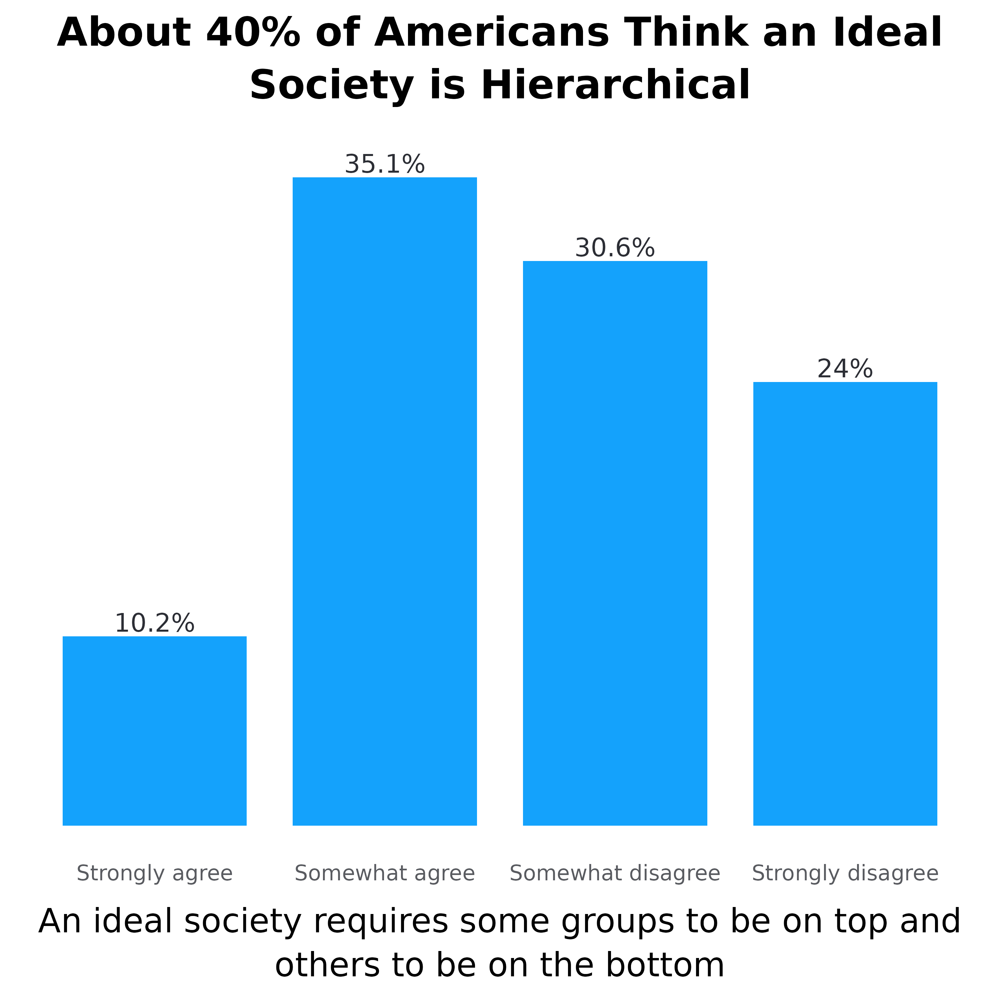

library(adlgraphs)
library(dplyr)
library(ggplot2)
library(stringr)
library(forcats)
library(haven)
library(labelled)
library(glue)At CAR, our data visualization often consists of creating bar plots. These can be stacked bar plots or dodged/grouped bar plots, horizontally or vertically oriented, and with or without confidence intervals. While bar plots may not be the flashiest of graphs, they are really valuable due to the ease at which they convey information, the amount of information they can convey, and the fact that most people know how to read them.
This tutorial is comprised of two parts and will likely be updated periodically over time:
The first part consists of a data visualization and style guide as it relates to creating bar plots so that they are consistent with CAR’s style.
The second part demonstrates how to use various functions from the
adlgraphspackage to make creating bar plots easier.
CAR’s bar plot visualization and style guide
Some general rules that apply to all bar plots:
The title ought to be no more than two lines and ought to be the main takeaway of the plot.
Subtitle can convey additional information not available in the rest of the plot. For example, it can help clarify what it is the plot is demonstrating.
Use exact question labeling whenever possible. This is most often used in the axis labels but can be in title.
The data point the bar is demonstrating should be directly labelled either inside or outside the bar.
Don’t include grid lines. They are unnecessary since the labels are already labelled.
Don’t label axes if not necessary.
When it comes to deciding the direction of the plot, just use your judgement on what looks best. All plots used on the website require a width of 1080px so if you are only comparing two bars, it may be better to just make it horizontal. However, it’s important to keep the aesthetic consistent throughout a report or presentation. For instance, if you are regularly using vertical bar plots, keep using that even if some might look a little better horizontally. The change in orientation may confuse readers and think it is demonstrating something different.
Simple bar plots
Simple bar plots are ones in which we are only comparing two variables, the x and y axis variables. We use these for both demonstrating frequencies as well as means. Additionally, they can be vertical or horizontal.
Now let’s look at these in action. Below is a simple vertical frequency plot. While this doesn’t have a subtitle, the rest of what is written above still applies. Each bar is directly labelled with the percentage.
There aren’t any grid lines since the bars are labelled directly
The plot title contains the main takeaway (or a main takeaway)
The y-axis title is not labeled since the columns are already labeled with data and % symbols.
The x-axis title is the exact question wording.
Each column is directly labeled outside the bar with the data value it represents and the % symbol.
Lastly, the order of the bars is not reordered by percentage since the values of the x-axis already have an inherent order.

Now let’s take a look at two simple vertical mean plots. The plot on the left shows the average score on the “American Conspiracy Thinking Scale” across educational groups. The American Conspiracy Thinking Scale shows the average response score across four statements. The plot on the right shows the average number of tropes endorsed from the ADL Index.
Both plots show the data label inside at the bottom of the bar, with white surrounding the number to improve visibility
Both plots have confidence intervals demonstrating statistical significance
The plot on the right does not have the y-axis labelled. This is because one of the bars has “Tropes Endorsed” inside of it which tells people what the numbers mean. This is ideal for when the y-axis is something easy to understand like average number of actions, statements, tropes, etc.


Now let’s take a look at a relatively simple horizontal bar plot. The same principles laid out previously apply here as well, however, there are some differences. For example, take the plot below. Here we are looking at the percentage of people from each education level who agree with a specific statement. Normally we would show this as a stacked plot with all response options, but occasionally we want something simpler. While this graph could be vertical, it is easier to read if done horizontally. Namely, people don’t have to turn their head to read the axes. Some notes:
When frequency plots are horizontal, the percentage labels go outside the columns to the right.
Again, the x-axis is not reordered because educational levels have an inherent order to them. However, if this were something without an inherent order, like race/ethnicity, we would reorder the columns based on the percentage so the top bar is highest and the bottom bar is lowest.
The y-axis does not have a title because it is obvious we are looking at education levels. This concept applies to other demographic groups. Only include titles if necessary.
While not super necessary, this graph has wrapped the y-axis labels (there are line breaks), this makes the graph look more symmetrical and keeps the x-axis title more centered. If adding line breaks try to keep them to three maximum whenever possible.
The x-axis is title is added to clarify what it is we are looking it.

Dodged bar plots
We don’t use dodged bar plots too frequently, but it is important to understand what to do if we do use them. We use dodged bar plots to demonstrate frequencies as well as mean plots. A typical example would be to compare the level of agreement with various statements among different groups of people. In this example, we’ll look at how people with and without a college degree differ in how much they agree with a few statements designed to measure conspiratorial mindset.
Make sure legend is aligned with the direction of the bars and in the same order. We can see this in the plot below. Since the plot is horizontal and the bars are above each other, the legend is to the right and the legend items are on top of each other. Furthermore, the order of the legend items are in the same order as the bars.
Another note: Since these statements were a bit long, we made the plot horizontal and wrapped them ove three lines. Typically, anything more than two or three words will be made into a horizontal bar plot. As it relates to wrapping the text, use your judgement. Make sure the text is easy to read, doesn’t overlap with each other, and the relative sizes of the bars is easy to see.
#> Warning in scale_adl(palette = "binary", wrap_legend_labels = 25, legend_title
#> = "none"): `n` has been deprecated as the function now automatically detects
#> number of colors needed.
Occasionally, we also do vertically dodged bar plots. As I mentioned above, we’ll use these when the axis labels are not large. For example, comparing the percentage of people endorsing different numbers of tropes/statements among different groups, like college graduates vs non-college graduates. Another example, comparing the average score for two measures, like conspiracy belief and social dominance orientation, across a group, like education level. I’ll demonstrate both examples below.
#> Warning in scale_adl(palette = "binary", wrap_legend_labels = 20, legend_title
#> = "Average Score:"): `n` has been deprecated as the function now automatically
#> detects number of colors needed.
Stacked frequency bar plots
This one of the most common bar plots CAR uses. We use horizontal stacked plots to demonstrate frequencies of different statements. We do not use vertical stacked plots. Here are some general notes unique to horizontal stacked plots:
When comparing frequencies of different statements, the legend should almost always go on top.
Each statement goes above the bar instead of to the left of it.
Each bar should be labelled. The labels should have white backgrounds for added visibility and should be centered within the bar. If two labels overlap, manually adjust their spacing.
The order of the response options goes like this: agree to disagree; true to false; favorable to unfavorable; etc. When used within the same report, it is important to keep the order of the response options the same in every graph. Generally, we want the value we are highlighting to come first. Oftentimes, this is the percentage who think a negative statement is true or agree with it.
The order of the statements should go from highest (on the top) to lowest (on the bottom)
#> Warning in scale_adl(palette = "likert_4", n = 4, wrap_legend_labels = 10, :
#> `n` has been deprecated as the function now automatically detects number of
#> colors needed.
How to create bar plots using the adlgraphs
package
This section is going to walk you through the graph creation process step by step. The main functions from this package that we will use are:
get_means(): Calculate means and confidence intervals.get_freqs(): Calculate frequencies.pct_conv(): Convert the results inget_freqs()to be easier to use in graphs by multiplying thepctvalues by 100 and creating a new variable calledpct_labthat takes thepctvalues and adds the “%” symbol.adl_bar_plots(): Take the prepared data and make a bar plot.scale_adl(): Set the colors and adjust other stuff related to the legendtheme_default(),theme_v_bar(),theme_h_bar(),theme_h_stack(): Adjust the visual appearance (theme) of the bar plot. These are already included inadl_bar_plot()so you won’t need to use these very often.
Graph 1
Let’s start off by making the first graph presented in this vignette.
First, we need to get the data for the graph. To do that, we’re going to
convert the variable top into a factor variable named
top_f by leveraging the the underlying metadata with the
make_factor() function. Then, we use
get_freqs() to calculate the frequencies.
# use the test data set
df <- test_data %>%
# convert top_f into a factor variable based on the underlying labels
mutate(top_f = make_factor(top)) %>%
# calculate the weighted frequencies
get_freqs(top_f, wt = wts)
df
#> # A tibble: 4 × 3
#> top_f n pct
#> * <fct> <dbl> <dbl>
#> 1 Strongly agree 25.1 0.102
#> 2 Somewhat agree 86.1 0.351
#> 3 Somewhat disagree 75 0.306
#> 4 Strongly disagree 58.9 0.240If the variable does not have value labels, then we can manually make
a new variable a factor with the correct response options using
[case_match_fct()], like what’s below. We can see that the
results are the exact same, but the example below requires a lot more
code (This is why metadata is so valuable!).
test_data %>%
# make top_f and set the factor levels using case_match_fct()
mutate(top_f = case_match_fct(
top,
1 ~ "Strongly agree",
2 ~ "Somewhat agree",
3 ~ "Somewhat disagree",
4 ~ "Strongly disagree"
)) %>%
# calculate the weighrted frequencies
get_freqs(top_f, wt = wts)
#> # A tibble: 4 × 3
#> top_f n pct
#> * <fct> <dbl> <dbl>
#> 1 Strongly agree 25.1 0.102
#> 2 Somewhat agree 86.1 0.351
#> 3 Somewhat disagree 75 0.306
#> 4 Strongly disagree 58.9 0.240Okay, now that we have the data, let’s make it easier to use in the
graph with the pct_conv() function. This function takes the
pct variable multiplies it by 100 and then takes that value
and adds the % symbol in a new variable called pct_lab. We
can see this below.
df <- df %>%
# clean up the data
pct_conv()
df
#> # A tibble: 4 × 4
#> top_f n pct pct_lab
#> <fct> <dbl> <dbl> <chr>
#> 1 Strongly agree 25.1 10.2 10.2%
#> 2 Somewhat agree 86.1 35.1 35.1%
#> 3 Somewhat disagree 75 30.6 30.6%
#> 4 Strongly disagree 58.9 24.0 24%Now that we have the data for a frequency plot properly set up, we
can make the bar plot. To do this we will use the
adl_bar_plots() function and because this a simple graph,
we only need to specify x, y, and
col_label. We set x to “top_f” so that the
graph is vertical and the response options are on the x-axis. We set
y to “pct” so that the bars set to the heights of the
percentage. Moreover, we need y to be a numeric value.
col_label is set to “pct_lab” and is the label that goes
outside the bars.
plot <- df %>%
adl_bar_plots(
# set the x-axis to top_f so it is vertical
x = top_f,
# set the y-axis to the pct
y = pct,
# set the variable that is used for the labels
col_label = pct_lab
)
plot
Now we need to add the plot title and axis title using
labs(). We don’t need the y-axis title so set
y = NULL. We are going to use attr_var_label()
to get the variable label, so set
x = attr_var_label(test_data$top).
plot <- plot +
labs(
y = NULL,
x = attr_var_label(test_data$top),
title = "About 40% of Americans Think an Ideal Society is Hierarchical"
)
plot 
Unfortunately, the x-axis title is too long. Since we are using
attr_var_label(), we need to use stringr::str_wrap()
to wrap the x-axis title. We are setting it to 55 so that the line break
occurs after 55 characters. The plot title is also too long so we need
to fix that as well. One way to do this is to use stringr::str_wrap()
again, or we can manually set it by adding \n to the title.
\n indicates where the line break should occur.
plot <- plot +
labs(
y = NULL,
x = str_wrap(attr_var_label(test_data$top), 55),
title = "About 40% of Americans Think an Ideal\nSociety is Hierarchical"
)
plot